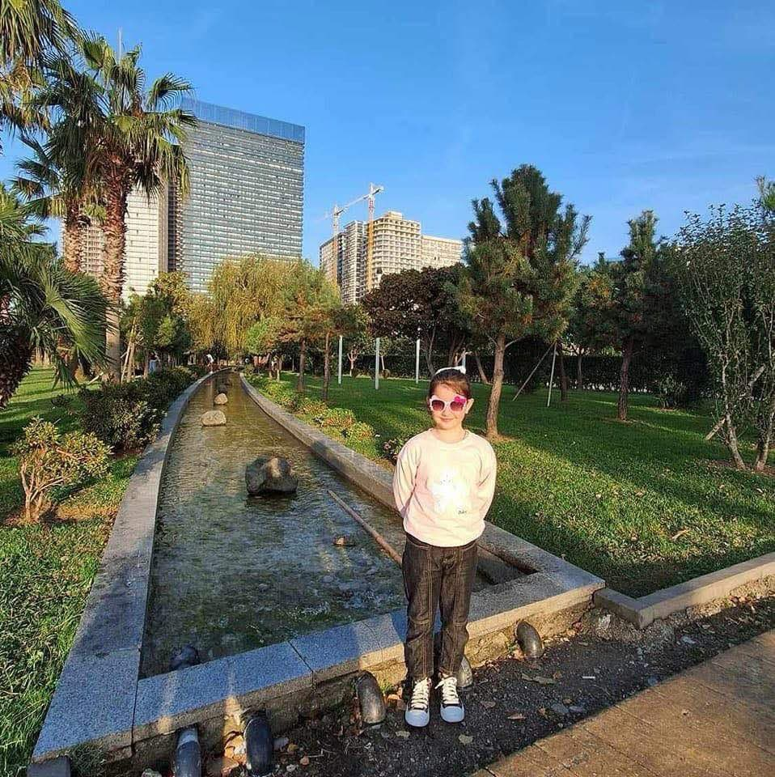
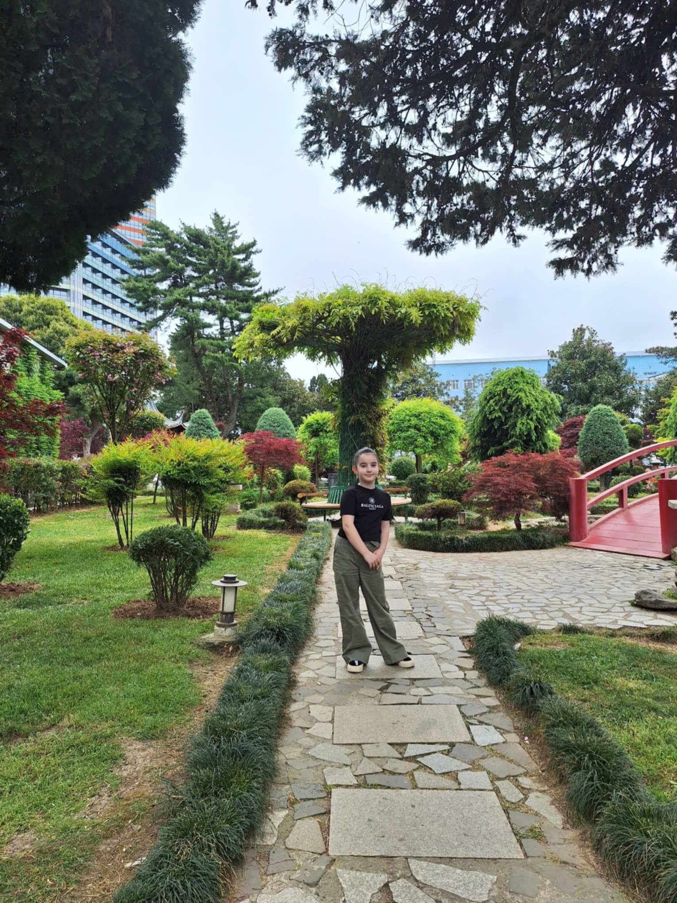

ჩემს შესახებ
გამარჯობა,მე ვარ ნუცა მალაყმაძე, მე ვარ 9 წლის,
მე დავდივარ ბათუმის ნომერ 6 საჯარო სკოლაში,ჩემი ერთერთი ჰობი არის ხატვა,
ხატვა ძალიან იყვარ სოფელში რომ მივდივარ სულ მიმაქვს სახატავი თანქრები,გუაშები...
 